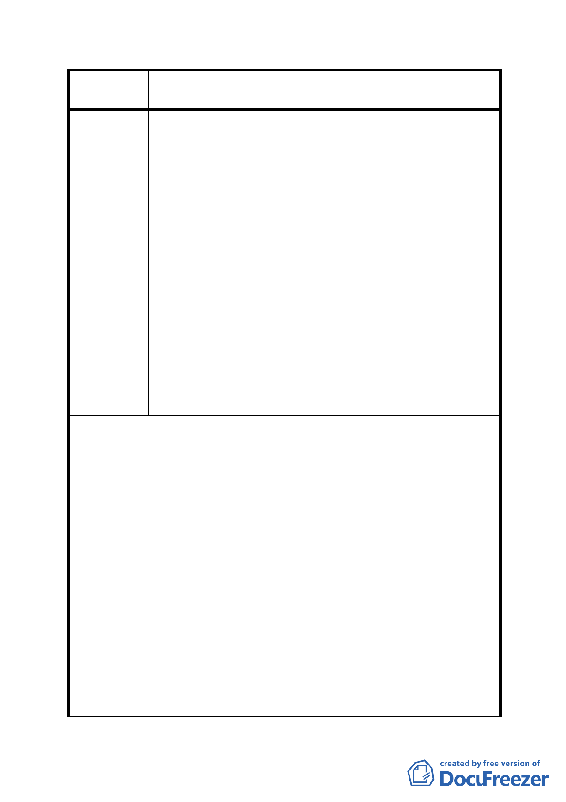

案
名
修訂臺北市「基隆河（中山橋至成美橋段）附近地區土地使
用分區與都市設計管制要點」（北段地區）計畫案
所之負責人辦公室均有獨立設置廁所或茶水間之需求。
2.需考量夜間加班之婦女於使用集中留設廁所之方便性並
防範治安風險。
五、臺北好好看申請案增加之獎勵容積之總合不得超過基準
容積之 50%（不含容積移轉基準容積之 20%）。
1.臺北好好看申請案原法令內容並無容積上限之規定。
2.本區已增訂【商業區、娛樂區申請開發作住宅使用時，須
於建築基地內提供具有公園、綠地或廣場性質之公共設
施】之相關規定，已可補足公共設施之不足。
3.因本區屬中低密度開發地區，商業區及娛樂區之最高容積
率僅 200%~250％，（供觀光旅館使用者為 300%），即使容
積獎勵增加至基準容積之 70%，獎勵後容積率亦僅為
340%~425%，均遠低於臺北市土地使用分區管制規則中第
三種商業區之 560%容積率，因此應不致造成開發強度過
高或交通無法負荷之現象。
一、土地及建築物之使用：
1.商業區及娛樂區，其作原計畫允許使用之低層部使用樓地
板面積，基地容積率為 200%者應達申請基地基準容積之
五分之一以上，基地容積率為 250%以上者應達申請基地
基準容積之四分之一以上，其餘樓層得比照臺北市土地使
用分區管制規則第三種商業區之規定辦理。
二、土地使用強度：
1. 取消本項商業區、娛樂區最小建蔽率之限制， 或 將採
建 議 辦 法 用綜合設計放寬規定者之最小建蔽率由 40%調降至 30%。
2. 增訂【商業區、娛樂區申請開發作住宅使用時，須於建
築基地內提供具有公園、綠地或廣場性質之公共設施，且
是項公共設施面積可納入「綜合設計放寬規定」之「有效
面積」計算】。
三、建築物立面寬度規定：
1.取消左列各項限制。 或
2.比照街廓編號C1、C2，將街廓編號A1、A2、B1、B2建築基
地面向基隆河及山景側之建築物立面，高於地面40公尺以
- 80 -